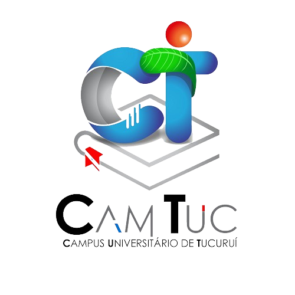

Sobre o FabLab Camtuc

Nome para a imagem
O que é o FabLab?
O FabLab CAMTUC é uma iniciativa dos cursos de Engenharia do Campus Tucuruí, Universidade Federal do Pará, com o objetivo de promover a fabricação digital no município de Tucuru, aperfeiçoar o ensino, desenvolver a região e um dia se juntar à rede mundial.
O seu objetivo é fornecer às pessoas meios de liberar seu potencial criativo através da fabricação de soluções para os problemas do dia a dia. Artesanato, robótica, costura, artes plásticas, maquetes, automação, marcenaria, inteligência artificial, são alguns dos desafios que o laboratório pode encarar.
As máquinas e ferramentas ali presentes permitem fabricar "quase qualquer coisa". No Lab tem impressoras 3D, cortadora de vinil, router laser, fresadoras, além de várias outras ferramentas elétricas e manuais para cortar, moldar, imprimir, soldar e transformar os mais variados tipos de materiais.
Logo do Campus de Tucuruí - CAMTUC
Espera-se com este projeto proporcionar um ambiente para trocar e materializar ideias, nas mais diversas áreas, tais como:
- Artesanato
- Automação comercial e residencial
- Brinquedos e jogos
- Projetos didáticos
- Provas de conceito para empresas e empreendedores aspirantes
- Protótipos para pesquisa acadêmica

Nome para a imagem